屈みA(3, 3, 9) キャンセル：連特必
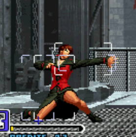
ほんの少しだけ攻撃判定が食らい判定より長い。屈みBより発生が早いのが利点。屈みB(5, 3, 8) キャンセル：連特必
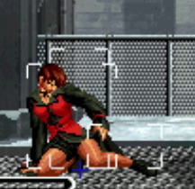
攻撃判定が出る前に食らい判定が少しだけ出る。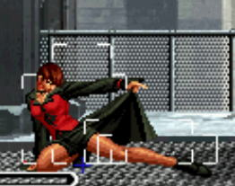
食らい判定より長い攻撃判定あり。食らい判定も低くなるが、攻撃判定が低い部分にしかない。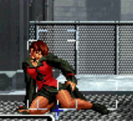
戻りモーションも食らい判定が少し前に出ている。屈みC(5, 2+4, 26) キャンセル：特必
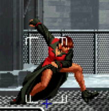
低めの食らい判定から…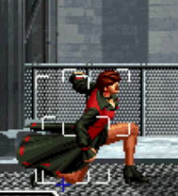
少し前に食らい判定を出しつつ、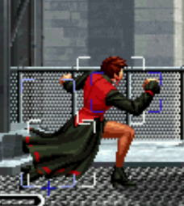
やや横方向に強い攻撃判定の1段階目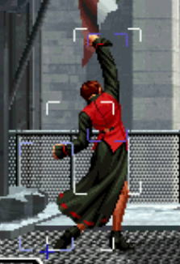
上に伸びる攻撃判定の2段階目。しかし食らい判定の方がさらにでかい＞＜；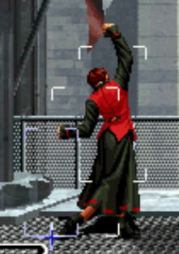
戻りモーションに入っても食らい判定は高いまま…屈みD(8, 5, 25) キャンセル：特必
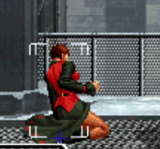
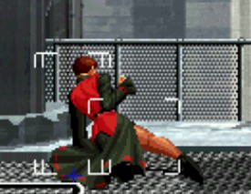
攻撃判定が出る前に食らい判定が前に出ます。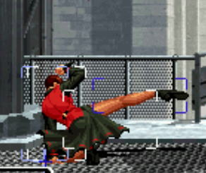
食らい判定より攻撃判定が横＆上方向どちらも大きいです。遠距離対空に使えるかも。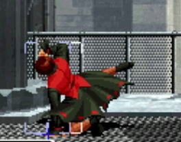
戻りモーションは食らい判定が引っ込んでます。優秀ですね。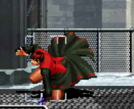
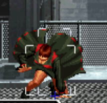
食らい判定低いですね。